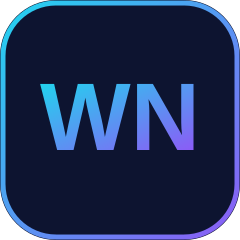

Institut Teknologi Del (IT Del)
S-1 Informatika · NIM 11S24032
Fokus pada pengembangan perangkat lunak, product design, simulasi, dan competitive programming.

Mahasiswa Informatika · Aspiring Full-Stack Developer
Mahasiswa S-1 Informatika di Institut Teknologi Del yang menikmati membangun antarmuka web modern dan memikirkan pengalaman pengguna di baliknya. Terbiasa bekerja dengan Next.js, TypeScript, dan Tailwind CSS, serta melatih kemampuan pemecahan masalah lewat competitive programming menggunakan Java. Saat ini tertarik memadukan pengembangan web dengan AI untuk membangun produk yang berguna.
S-1 Informatika · NIM 11S24032
Fokus pada pengembangan perangkat lunak, product design, simulasi, dan competitive programming.
IT Del · Organisasi kemahasiswaan
Aktif bersama paduan suara mahasiswa IT Del. Menyusun proposal pendanaan penampilan vokal untuk perayaan Dies Natalis ke-25 Yayasan Del, mencakup anggaran, susunan tim, dan repertoar.
IT Del · Kepanitiaan
Membantu penyelenggaraan hackathon dan merancang aset visual acara (banner dan sertifikat pemenang) bergaya dark tech neon menggunakan Canva.
Situs portofolio dark-mode dengan navbar glassmorphism, hero beranimasi, tech-stack marquee, kartu proyek, timeline pengalaman, dan form kontak.
Portal pre-order kantin IT Del yang terintegrasi dengan Sistem Informasi Kampus (CIS), disusun sebagai studi kasus Design Thinking lengkap dengan simulasi antrean.
Simulasi interaktif berbasis discrete-event dalam satu file HTML/Canvas, dengan narasi suara berbahasa Indonesia, statistik langsung, dan kontrol kecepatan.
Website perusahaan jasa AI: landing page dengan CSS murni, blog dengan Bootstrap 5, dan CV ini dengan Tailwind CSS 4.